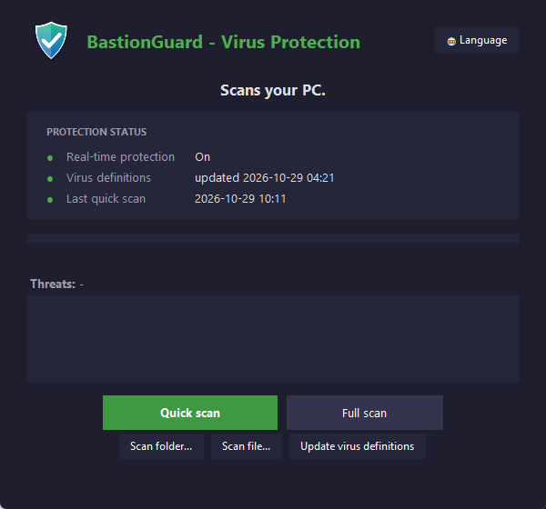

Keep your PC clean of viruses.
BastionGuard scans your whole PC, a folder or a single file and shows exactly what it finds. You decide what gets removed.

Everything you need, nothing extra
No accounts, no ads and nothing running in the background. Open it, scan, done.
Quick or full scan
A quick scan takes a couple of minutes. A full scan checks every file on your PC.
Scan a folder or file
Downloaded something you're not sure about? Check that file before you open it.
Update virus definitions
Get the latest virus definitions in one click, so new threats are caught too.
Protection status
See at a glance if real-time protection is on, how old your definitions are and when you last scanned.
You decide
If something is found, BastionGuard asks before removing anything, then shows the real result.
Trusted files
Sure a file is safe? Mark it as trusted and it will be left alone.
Up and running in a minute
BastionGuard doesn't need to be installed. It's a single file you just open.
-
Download
Click Download for Windows and save BastionGuard.exe.
-
Open the file
If Windows shows a blue box, click More info and then Run anyway.
-
Pick a language and scan
Your language is saved for next time. Press Quick scan to start.
Frequently asked questions
Can't find your answer? Open the app and try it. It doesn't change anything without asking first.
How does BastionGuard work?
BastionGuard uses the virus protection already built into Windows (Microsoft Defender) to scan for and remove threats, and makes it simple to use. BastionGuard is not made by Microsoft.
Why does Windows warn me when I open the file?
Windows SmartScreen warns about programs that aren't digitally signed or that not many people have downloaded yet. It doesn't mean the file is dangerous. Click More info and then Run anyway.
Does it cost anything?
No. BastionGuard is free, with no ads and no account.
Why does it ask for administrator access?
Only when you remove threats or mark a file as trusted. Windows requires administrator permission to change virus protection. Scans work without it.
What do I need?
Windows 10 or 11 with Windows Security turned on. It's on by default on most PCs.